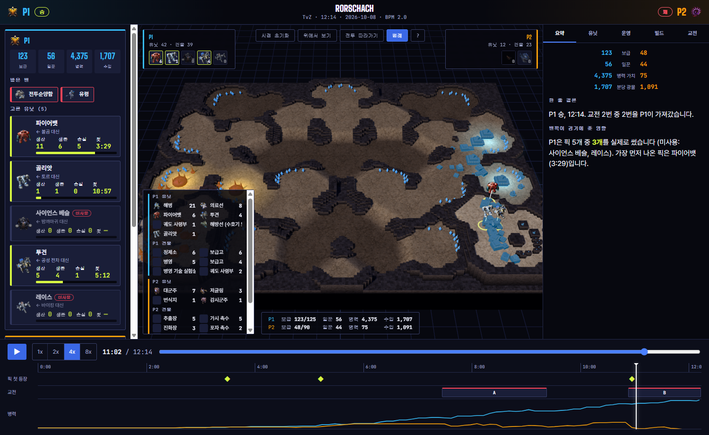
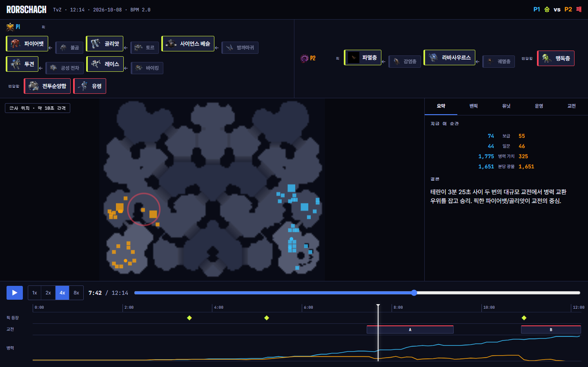
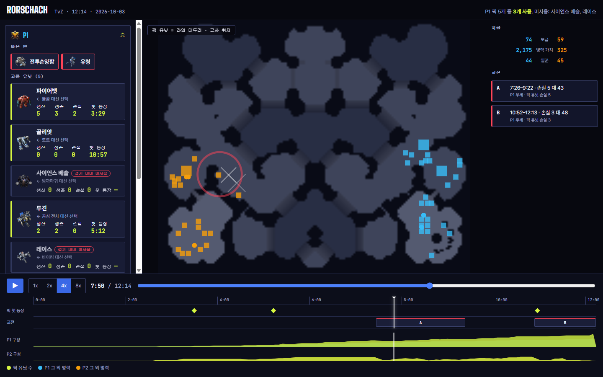
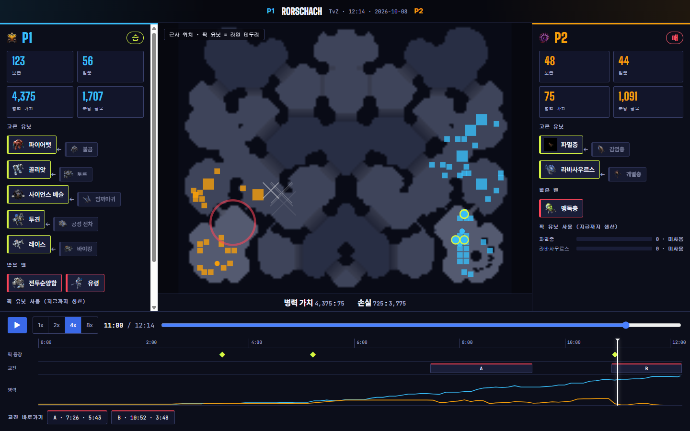
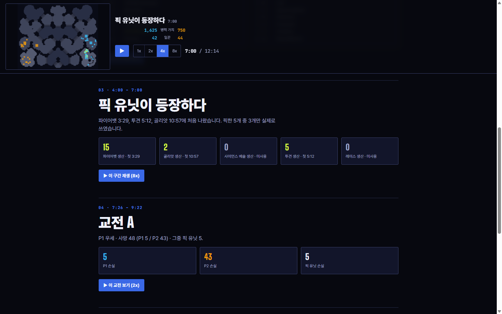
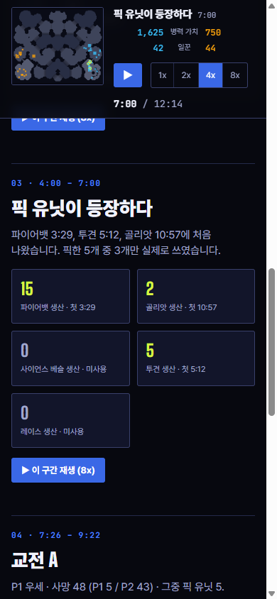
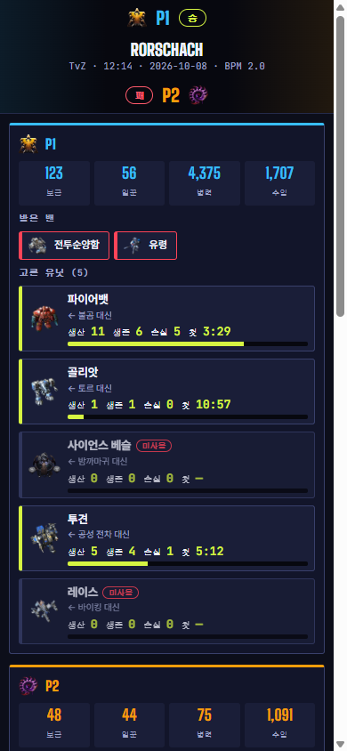

BPM 리플레이 뷰어 · 레이아웃 시안 5종
어떤 화면이 이 경기를 가장 잘 보여줄까
다섯 시안 모두 실제 경기 한 판(BPM_Rorschach, TvZ, 12분 14초)의 실제 데이터와 엔진의 실제 지형 격자로 움직입니다. 재생·배속·타임라인 클릭·키보드(스페이스, ←→)가 모두 동작합니다. 위치는 리플레이의 약 10초 간격 표본을 보간한 근사이고, 교전은 사망 밀도로 단순 감지한 것입니다(제품에서는 더 다듬을 부분). 시안 간 비교를 위한 것이라 문구와 색은 확정이 아닙니다.
로컬에서 보려면 BPM_Site 폴더에서 python -m http.server 8099 후 http://localhost:8099/design-lab/viewer/index.html
E 합성안 — 2 + 3 + 1, 그리고 게임 같은 3D 지도

- • 왼쪽: 2안의 살아 있는 밴픽 보드(픽별 생산·생존·손실·첫 등장, 미사용 표시)에 3안의 플레이어별 큰 숫자와 사용 막대를 합침
- • 가운데: 실제 높이 격자로 세운 3D 지도(절벽·경사로·그림자·기지 주변 빛·광물), 종족별 스킨, 모서리의 플레이어 카드와 아래 수치 줄. 드래그로 회전, 휠로 확대, "전투 따라가기" 카메라
- • 오른쪽: 1안의 탭 패널(요약·유닛·운영·빌드·교전)
- • 픽한 유닛은 위키 아이콘이 머리 위에 뜨고 라임 기둥이 서서 지도에서도 BPM의 선택이 보임
유닛·건물 스킨은 직접 만든 종족별 절차적 스킨(테란 패널 금속, 저그 유기체, 프로토스 금빛)이고 블리자드 원본 모델이 아닙니다. 지형 질감도 높이·건설 가능·경사로 데이터를 따라 직접 칠한 것입니다.
E 열기 →
A 방송 중계형

왼쪽 큰 지도, 오른쪽 탭 패널, 아래 타임라인. 밴픽은 지도 위의 가로 띠로 항상 보입니다. 참고 사이트와 가장 비슷한 구성(기준선).
좋은 점- 지도가 가장 크고 익숙한 구성
- 탭이 늘어나도 구조가 안 변함
- 구현이 가장 단순
아쉬운 점- 참고 사이트와 비슷해 차별이 약함
- 픽 5개면 밴픽 띠가 3줄이 되어 지도를 눌러 버림
- 픽의 "사용 현황"은 탭을 눌러야 보임
B 밴픽 우선형

왼쪽 밴픽 보드가 경기 내내 살아 있습니다. 픽마다 생산·생존·손실·첫 등장이 재생 위치를 따라 바뀌고, 쓰지 않은 픽은 "미사용"으로 표시됩니다. 아래에 픽 유닛 비중 차트.
좋은 점- BPM만의 정보("이 픽을 썼나")가 첫눈에
- 밴·픽·사용 현황이 한곳
- 이 경기에서 사이언스 베슬·레이스 미사용이 바로 보임
아쉬운 점- 3단 구성이라 폭이 필요(작은 화면은 세로로 쌓음)
- 지도가 A보다 작음
- 실시간 사용 현황 계산이 추가됨
C 대결 화면형

지도를 사이에 두고 플레이어 카드가 좌우에. 각자의 밴픽·실시간 수치·픽 사용 막대가 자기 쪽 열에 모입니다. 스코어보드 같은 방송 화면.
좋은 점- 누구의 정보인지 헷갈리지 않음
- 숫자가 크고 읽기 쉬움, 중계 느낌
- 콜로세움(AI 대 AI) 경기에 어울림
아쉬운 점- 카드가 길면 내부 스크롤
- 두 사람을 비교하려면 시선이 좌우로 움직임
- 탭/상세 분석을 넣을 자리가 애매
D 이야기형 스크롤

한 줄 읽기 화면. 고정된 미니맵이 지금 보는 챕터(밴픽→초반→픽 등장→교전→결과)에 맞춰 움직이고, 스크롤하면 시계도 이동합니다. 챕터마다 "이 구간 재생".
좋은 점- 모바일에서 가장 자연스러움
- 해설·설명을 글로 풀기 좋음(코치 문장)
- 시간 순서로 읽는 "이야기"
아쉬운 점- 지도가 작음 — 재생 몰입이 약함
- 밴픽이 첫 챕터에만 크게 나옴
- 한눈에 전체를 보기 어려움
비교표
표의 평가는 제 판단이며 정답이 아닙니다. ◎ 매우 좋음 · ○ 보통 · △ 약함
제 추천 (조합안)
화면 크기에 따라 다른 시안을 쓰는 반응형 조합입니다.
- • 데스크톱 = B의 밴픽 보드 + 가운데 지도 + A의 탭 패널(운영·빌드·교전·코치)을 오른쪽에 합친 형태. 밴픽 정보는 보드가, 숫자 분석은 탭이 맡습니다.
- • 모바일 = D의 고정 미니맵 + 챕터 스크롤. 같은 데이터를 쓰므로 화면 폭만 바뀝니다.
- • 콜로세움(AI 대 AI) 경기 페이지 = C. 두 AI의 페르소나 이름과 밴픽을 크게 보여주는 방송 화면.
이유: 이 제품에서 새로 줄 수 있는 가치는 "픽을 썼는가, 밴이 무엇을 막았는가"인데, B가 그것을 가장 먼저 보여 주고 A의 탭 구조는 분석을 늘려도 흔들리지 않기 때문입니다.
모바일 모습 (시안 D, E)


390px 폭. 상단에 미니맵·시계·재생 컨트롤이 고정되고 본문이 스크롤됩니다. 가로 넘침 없음. B와 C도 이 폭에서는 세로로 쌓이지만 지도 아래로 길어집니다.
직접 눌러 볼 것
- • 스페이스로 재생, 타임라인의 A/B 교전 칩을 눌러 이동, ◆(픽 첫 등장)을 눌러 해당 유닛이 처음 나온 순간으로 이동
- • 지도에서 라임 테두리 유닛 = 픽한 유닛. 붉은 원 = 진행 중인 교전, 흰 ✕ = 방금 죽은 유닛
- • 시안마다 같은 시각(7분 40초 전후)에서 정보가 어디에 있는지 비교